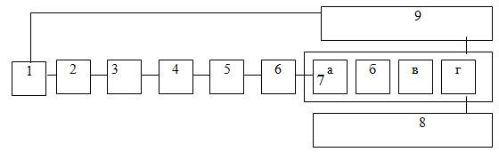

Унифицированной концепцией защиты информации (УКЗИ) будем называть инструментально-методическую базу, обеспечивающую практическую реализацию каждой из стратегий защиты
(оборонительной, наступательной, упреждающей), причем реализацию оптимальным образом, на регулярной основе и при минимальных затратах.
Cтруктура УКЗИ приведена на рис. 4.
1. Концепции задающие ситуацию защиты. Ситуацию защиты, естественно, формируют концепции построения и использования АСОД и условия их функционирования. В настоящее время довольно четко обозначается тенденция построения таких АСОД, которые создавали бы объективные предпосылки для оптимального информационного обеспечения деятельности современных объектов (предприятий, учреждений, других организаций) на регулярной основе.
Основными путями решения данной задачи являются формирование на каждом объекте информационного кадастра, построение унифицированной технологии автоматизированной обработки информации и разработка методологии организации информационного обеспечения деятельности объектов. Итогом реализации этой методологии будет система решения основных задач объекта, связанных с использованием информации, на принципах и методах поточно-индустриального производства.
2. Методология описания ситуации защиты.В классической теории систем под описанием любой ситуации подразумевается строго формальное представление архитектуры и процессов функционирования соответствующей системы. К этому необходимо стремиться и при описании ситуации защиты. Однако как уже отмечалось, одна из наиболее характерных особенностей ситуаций, возникающих в процессе решения задач защиты, заключается в повышенном влиянии случайных факторов. В качестве выхода из положения понятие формализации расширяется до уровня структуризации, причем под структуризацией ситуации понимается представление структуры в виде совокупности взаимодействующих элементов, а при определении характеристик элементов и систем в целом и процессов их функционирования наряду с количественными допускается использование лингвистических переменных.
3. Система показателей уязвимости (защищенности) информации.Под показателем уязвимости информации понимается мера потенциально возможного негативного воздействия на защищаемую информацию. Величина дополняющая меру уязвимости до максимально возможного значения представляет собою меру защищенности информации. Поскольку современные АСОД и технологические схемы их функционирования могут быть чрезвычайно сложными, то не удается одним каким-либо показателем удовлетворить потребности решения всех задач защиты, необходимо некоторое (как оказалось, достаточно большое) их число. Однако при независимом их формировании и использовании неизбежна путаница и другие неудобства. Чтобы избежать этого, все показатели должны быть объединены в некоторую упорядоченную систему.

Рис. 4. Структура унифицированной концепции защиты информации
1 – концепции, формирующие среду защиты
2 – структуризация защиты
3 – система показателей защищенности информации
4 – система дестабилизирующих факторов, воздействующих на информацию
5 – методология оценки уязвимости информации
6 – методология определения требований к защите информации7 – система концептуальных решений по защите информации а) функции защиты
б) задачи защиты
в) средства защиты
г) системы защиты
8 – требования к концептуальным решениям
9 – условия, способствующие повышению эффективности защиты
4. Система дестабилизирующих факторов, влияющих на уязвимость (защищенность) информации.Под дестабилизирующим фактором понимается то событие или явление, которое может произойти в АСОД, и содержащее в себе потенциальную возможность такого негативного воздействия на информацию, результатом которого может быть повышение значений каких-либо показателей уязвимости защищаемой информации и соответственно – снижение показателей ее защищенности. Как и в случае показателей уязвимости (защищенности) информации, речь идет о формировании упорядоченной и полной системы дестабилизирующих факторов, т. е. угроз информации, что предопределяется потребностями решения задач защиты. В самом деле, если для реализации оборонительной стратегии защиты достаточно иметь сведения об уже известных и наиболее опасных угрозах, то для наступательной стратегии необходимы сведения о всех когда-либо проявляющихся угрозах. Для реализации же упреждающей стратегии необходимы сведения о всех потенциально возможных угрозах как в существующих, так и в перспективных СОД. Совершенно очевидно, что формирование полной в указанном выше системы угроз представляет собою весьма сложную и неординарную задачу.
5. Методология оценки уязвимости (защищенности) информации.В соответствии с изложенным выше, данная методология должна содержать методы, модели и инструментальные средства определения текущих и прогнозирования будущих значений каждого из системы показателей уязвимости (защищенности) информации под воздействием каждой из потенциально возможных угроз и любой их совокупности. С точки зрения классической теории систем подобные задачи выделены в класс задач анализа, и для их решения разработан весьма представительный арсенал методов, рассчитанных как на системы детерминированного, так и стохастического характера. Однако в силу очень высокого влияния на процессы защиты информации случайных факторов, для многих из которых к тому же неизвестны (по крайней мере в настоящее время) законы распределения и числовые их характеристики, указанные методы лишь частично могут быть использованы для решения рассматриваемых задач. Для системного их решения понадобились методы, существенно выходящие за рамки классической теории систем.
6. Методология определения требований к защите информации.Данный компонент унифицированной концепции защиты информации играет повышенную роль, поскольку в решающей степени предопределяет подходы, средства и методы практической организации защиты. В классической теории систем предполагается, что требования к любым параметра создаваемых систем определяется в количественном выражении. Однако, в силу повышенной неопределенности процессов защиты информации, предложить строго формальную и адекватную методику определения требуемого уровня защиты не удается (по крайней мере в настоящее время). Таким образом, приходится довольствоваться эвристическими и теоретикоэмпирическими методами. À поскольку требованиями к защите в решающе степени предопределяется построение соответствующей системы защиты и технологии ее функционирования, то в целях повышения адекватности решения рассматриваемой задачи решать ее оказалось целесообразным во взаимосвязи с задачей оптимизации и стандартизации систем защиты информации.
7. Система концептуальных решений по защите информации.Под концептуальным понимается такое решение, которое создает объективные предпосылки для формирования инструментальных средств, необходимых и достаточных для эффективного решения всей совокупности соответствующих задач на регулярной основе и в соответствии с требованиями к их решению, которые, в свою очередь, определяются целями функционирования соответствующей системы. Отсюда следует, что концептуальные решения должны быть научно обоснованными и оптимальными с точки зрения сочетания объективных требований к решению соответствующих задач и объективных предпосылок их решения. А отсюда, в свою очередь, следует, что должны быть механизмы оценки оптимальности решения задач на основе концептуальных решений. Приведенные положения целиком и полностью относятся также к принятию концептуальных решений по защите информации.
Из теории управления известно, что принятие решений относится к числу слабостурктуризованных задач, поэтому методики их решения в значительной мере основываются на эвристических методах. Особенно важна доля эвристической составляющей в методиках принятия решений в условиях неопределенности.
Как следует из рис. 4, указанные концептуальные меры свелись к введению взаимосвязанной цепочки понятий: функции защиты – задачи защиты – средства защиты – система защиты, причем доказано, что эти решения удовлетворяют всем приведенным выше требованиям.
8. Система требований к концептуальным решениям.Содержание данного компонента концепции защиты заключается в обосновании таких требований к каждому из концептуальных решений, которые обеспечивали бы достижение целей их принятия наиболее рациональным образом. Эти требования приводятся и обосновываются в перечисленных выше главах при рассмотрении соответствующего решения.
9. Условия, способствующие повышению эффективности защиты информации.Основное назначение и содержание данного компонента концепции защиты информации заключается том, чтобы сформировать и обосновать перечень и содержание тех условий, соблюдение которых будет существенно способствовать повышению уровня защиты при расходовании выделенных для этих целей средств или расходования возможно меньшего объема средств для обеспечения требуемого уровня защиты. В теории защиты информации доказано, вопервых, что эти условия образуют достаточно представительную систему, а во-вторых, что подавляющая часть этих условий относится к построению, организации и обеспечению функционирования АСОД. Иными словами, указанная система условий выступает в качестве обратной связи от концептуальных решений по защите информации к ситуации, порождающей саму проблему защиты, т. е. к компоненту № 1 рассматриваемой здесь концепции защиты.
Отсюда следует, что унифицированная концепция защиты представляет собою кибернетическую систему, что и создает объективные предпосылки для оптимального решения задач защиты.